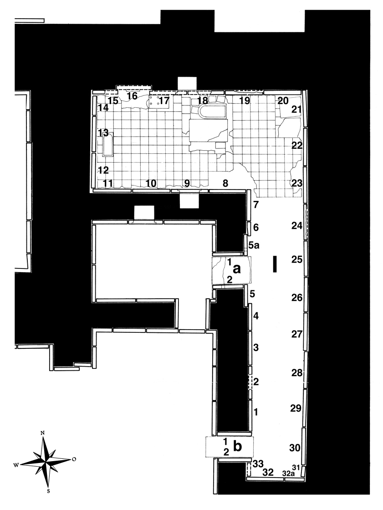

Room I
Layard excavated Room I, one of the so-called “bathrooms” of the palace, in 1847. It is L-shaped and a mirror image of Room L, separated from it by the small chamber K.
The designation as bathrooms is due to the fact that the floors of both rooms were covered with stone slabs, some of them with drains, that suggested the intensive use of water in those rooms (though some similar features are also found in other places nearby). Many of their reliefs indicate cleaning and libation rituals. Russell (AJA 102 [1998] 697) concludes: “In sum, then, the architectural and sculptural fixed features of the entire east wing seem to be cues for an overall function of purification, both of the implements of royal power and of the person of the king himself.”
Layard found 35 reliefs in Room I (I-1 through I-33, plus I-5a and I-32a—since these numbers had accidentally been used twice), and in addition four slabs in the doorways. Most of the reliefs showed four genies each in two panels, separated by the standard inscription.
The reconstruction of the reliefs in this room has proved to be the most difficult and has not been finalized to this day. One of the main reasons was already described by Gadd in 1936 (The Stones of Assyria p. 211): “This room was the mine which has supplied perhaps more of its detached panels and single figures to various destinations throughout the world than any other part of an Assyrian ruin. The temptation to secure these comparatively portable ‘souvenirs’ was so great that few of the slabs seem to have escaped mutilation (there is not one in the British Museum itself, but only panels.)”
Only 7 complete reliefs have survived (I-8 [Mosul], I-9–I-11 [in situ], I-12 & I-13 [Berlin]; I-25 [Brooklyn] and I-30 [Metropolitan Museum]).
Click on I in the middle of the room to see all panels positioned in their respective walls, or on the individual panels along the inner walls and in the entryways to go to CDLI pages associated with them.
 |
Relief Slabs by Collection (duplication results from individual fragments in different places; as a rule, the list of missing reliefs/fragments does not include the middle parts of the reliefs that contained the “standard inscription”) Amherst College, Amherst, MA |